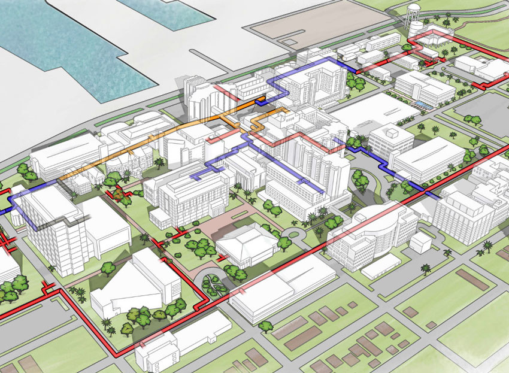

Campus Map
University of Texas Medical Branch
Campus Map
University of Texas Medical Branch
The UTMB campus infrastructure was severely damaged by flood waters caused by Hurricane Ike. This map illustrates proposed infrastructure upgrades designed to increase energy effeciency and storm resiliance.
This illustration is used by Affiliated Engineers, Inc. for several of their marketing pieces regarding the UTMB campus, and infrastructure resiliance.